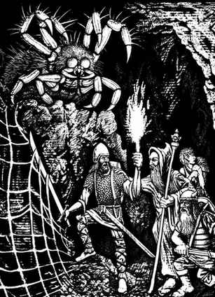

蜘蛛 · Spider
巨型蜘蛛 · Giant Spider
 |
|
巨型蜘蛛会结网，将黏性陷阱横向或纵向布置，捕捉触碰蛛网的生物；有些会潜伏在道路上方，突然落下袭击猎物。蛛网坚韧黏稠，如同蛛网术：力量 18 或更高的生物一轮内可挣脱，力量 17 需 2 轮，依此类推。蛛网极易燃烧。巨型蜘蛛的咬噬带毒，目标未通过毒素豁免即死亡。遇到明显强于自己的敌人时，巨型蜘蛛会逃跑，通常躲到隐蔽地点。
巨大蜘蛛 · Huge Spider
| 项目 | 数据 |
|---|---|
| 出现频率 | 常见 |
| 出现数量 | 1–12 |
| 护甲等级 | 6 |
| 移动力 | 18 寸 |
| 生命骰 | 2+2 |
| 在巢穴概率 | 50% |
| 财宝类型 | J–N、Q |
| 攻击次数 | 1 次 |
| 攻击伤害 | 1–6 |
| 特殊攻击 | 见下文 |
| 特殊防御 | 无 |
| 魔法抗性 | 标准 |
| 智力 | 动物 |
| 阵营 | 中立 |
| 体型 | M |
| 灵能能力 | 无 |
典型的巨大蜘蛛不结网，而是像狼蛛一样游猎。它能跳跃 3 寸扑向猎物并施以致命咬噬；其他同类会建造隐蔽藏身处，突然冲出攻击，例如巨型活板门蜘蛛。巨大蜘蛛的毒素豁免检定获得 +1；它们突袭猎物时以 1–5（而非通常的 1）作为突袭点数。
大型蜘蛛 · Large Spider
| 项目 | 数据 |
|---|---|
| 出现频率 | 常见 |
| 出现数量 | 2–20 |
| 护甲等级 | 8 |
| 移动力 | 6 寸／15 寸（蛛网） |
| 生命骰 | 1+1 |
| 在巢穴概率 | 60% |
| 财宝类型 | J–N |
| 攻击次数 | 1 次 |
| 攻击伤害 | 1–4 |
| 特殊攻击 | 毒素 |
| 特殊防御 | 无 |
| 魔法抗性 | 标准 |
| 智力 | 非智能 |
| 阵营 | 中立 |
| 体型 | S |
| 灵能能力 | 无 |
大型蜘蛛到处爬行，在墙壁、天花板和地面上进出蛛网，不断寻找受害者。它们有 90% 的概率攻击 3 寸内的任何生物；其毒素通常较弱，因此目标毒素豁免获得 +2。
相位蜘蛛 · Phase Spider
| 项目 | 数据 |
|---|---|
| 出现频率 | 稀有 |
| 出现数量 | 1–4 |
| 护甲等级 | 7 |
| 移动力 | 6 寸／15 寸（相位） |
| 生命骰 | 5+5 |
| 在巢穴概率 | 75% |
| 财宝类型 | E |
| 攻击次数 | 1 次 |
| 攻击伤害 | 1–6 |
| 特殊攻击 | 见下文 |
| 特殊防御 | 见下文 |
| 魔法抗性 | 标准 |
| 智力 | 低 |
| 阵营 | 中立 |
| 体型 | L |
| 灵能能力 | 无 |
相位蜘蛛外表像巨大蜘蛛，却能在攻击或被攻击时移出当前相位，直到准备好施展毒咬才返回。目标进行毒素豁免时 −2。移出相位时几乎免疫所有攻击；相位门术会迫使它保持在当前相位 7 个战斗轮。以太性油和以太护甲也能让使用者进入与相位蜘蛛相同的相位。相位蜘蛛的蛛网等同于巨型蜘蛛的蛛网，并会避开对自己不利的遭遇。
巨型水蜘蛛 · Water Spider, Giant
| 项目 | 数据 |
|---|---|
| 出现频率 | 常见 |
| 出现数量 | 1–10 |
| 护甲等级 | 5 |
| 移动力 | 75 寸（水下） |
| 生命骰 | 3+3 |
| 在巢穴概率 | 90% |
| 财宝类型 | J–N、Q |
| 攻击次数 | 1 次 |
| 攻击伤害 | 1–4 |
| 特殊攻击 | 毒素 |
| 特殊防御 | 无 |
| 魔法抗性 | 标准 |
| 智力 | 半智能 |
| 阵营 | 中立 |
| 体型 | M |
| 灵能能力 | 无 |
巨型水蜘蛛生活在淡水中，只在大型湖泊出现。它们在水下植物间结成充满空气的巢穴，能沿湖底或水下植物、岩石表面奔跑，捕捉经过的猎物，施以毒咬后带回巢穴慢慢吸干。聪明的气闸结构使其能自由进出而不损失空气。尼克希等水生生物有时会与巨型水蜘蛛友善相处，以食物作为接近它们的礼物；废弃的水蜘蛛巢穴是适合会呼吸空气者的避难处。还有一种罕见的海水水蜘蛛，体型约为上述种类的两倍。